Una selezione esclusiva di prodotti premium da aziende certificate, pensata per arricchire l'assortimento della Grande Distribuzione con qualità, innovazione e marginalità.
Soluzioni innovative per la ristorazione — CBT · Cottura Sottovuoto a Bassa Temperatura
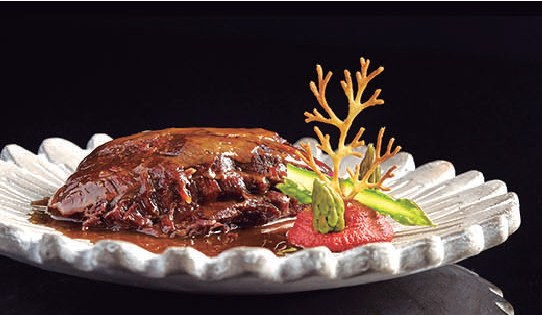
Guance di manzo cotte a bassa temperatura per oltre 16 ore. Prodotto tenero e ricco di succo di cottura, da servire intero, tagliato o porzionato con fondo bruno o salsa a piacere.
| Confezione | 6 sacchetti da ±400 g |
| Shelf life | 24 mesi · 3 mesi in frigo dopo scon. |
| Rigenerazione | 5 min microonde 800W o 10 min bagnomaria |
| Glutine | Senza Glutine |
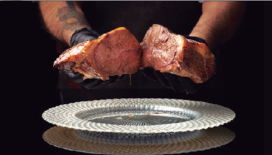
Taglio di vitello ideale per CBT, con venatura di collagene che in cottura dona morbidezza e sapore. Rigenerazione semplice al forno e servizio con il suo succo.
| Confezione | 2 sacchetti da ±2 kg |
| Shelf life | 24 mesi · 3 mesi in frigo dopo scon. |
| Rigenerazione | 20–25 min forno 200°C |
| Glutine | Senza Glutine |
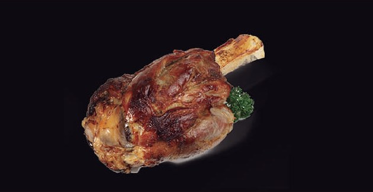
Stinco di vitello cotto sottovuoto per oltre 15 ore. Il mezzo stinco è pensato per due commensali e si rigenera al forno per ottenere esterno rosolato e interno morbido.
| Confezione | 4 sacchetti da 1–1,2 kg |
| Shelf life | 24 mesi · 3 mesi in frigo dopo scon. |
| Rigenerazione | 25–30 min forno 200°C |
| Glutine | Senza Glutine |
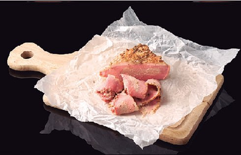
Punta di petto di manzo Angus certificato, cotta sottovuoto per oltre 15 ore con tocco affumicato. Da tagliare sottile contro fibra e servire caldo o freddo.
| Confezione | 4 sacchetti da ±1 kg |
| Shelf life | 24 mesi · 5 giorni in frigo dopo scon. |
| Servizio | Fettine sottili con succhi di cottura |
| Glutine | Senza Glutine |
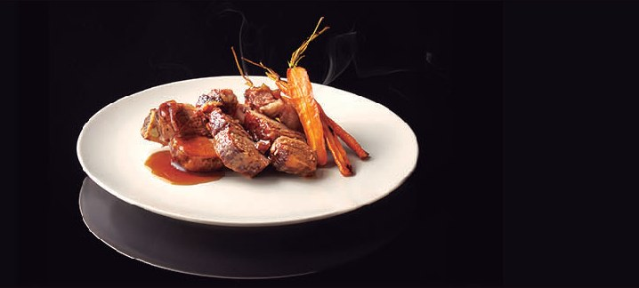
Biancostato di manzo cotto sottovuoto a bassa temperatura per oltre 15 ore. Prodotto pronto da rigenerare al forno e servire con il succo di cottura.
| Confezione | 6 sacchetti da ±550 g |
| Shelf life | 24 mesi · 3 mesi in frigo dopo scon. |
| Rigenerazione | 15–20 min forno 200°C |
| Glutine | Senza Glutine |
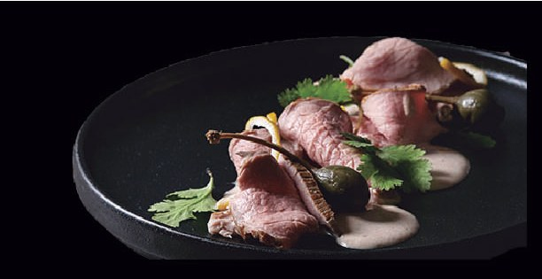
Girello di vitello cotto a bassa temperatura per mantenere una consistenza rosata. Pensato per vitello tonnato, roast beef e servizio freddo affettato.
| Confezione | 4 sacchetti da 1–1,6 kg |
| Shelf life | 24 mesi · 3 mesi in frigo dopo scon. |
| Servizio | Affettatrice o coltello a lama liscia |
| Glutine | Senza Glutine |
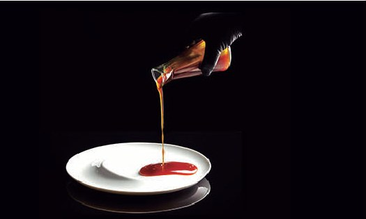
Fondo bruno premium con 40% di coda di manzo cotta per oltre 6 ore con verdure fresche. Da usare come fondo, demi-glace, base salsa o brodo diluito.
| Confezione | 2 secchielli da 1,4 kg |
| Shelf life | 24 mesi · 5 giorni in frigo dopo scon. |
| Preparazione | Riscaldare fino a ebollizione e rimescolare |
| Uso | Fondo bruno, salsa carne, brodo diluito |
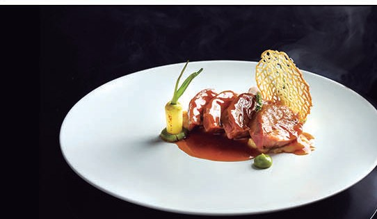
Guance di maiale cotte sottovuoto a bassa temperatura per oltre 9 ore. Si possono servire intere oppure tagliate e scottate ad alta temperatura con salsa a piacere.
| Confezione | 4 sacchetti da ±1 kg |
| Shelf life | 24 mesi · 3 mesi in frigo dopo scon. |
| Rigenerazione | 5 min microonde 800W o 10 min bagnomaria |
| Glutine | Senza Glutine |
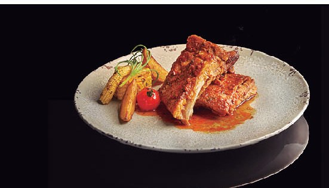
Costine di maiale cotte sottovuoto per oltre 12 ore, pronte per rigenerazione rapida al forno. La scheda copre le due varianti disponibili, pensate per presidiare sia una proposta BBQ sia una versione mediterranea alle erbe.
| Confezione | 6 sacchetti da ±600 g |
| Shelf life | 24 mesi · 3 mesi in frigo dopo scon. |
| Rigenerazione | 15 min forno 180–200°C |
| Glutine | Senza Glutine |
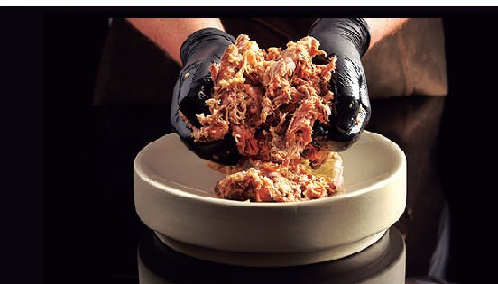
Capocollo di maiale cotto a bassa temperatura per oltre 12 ore, elaborato con carne e spezie. Soluzione pronta per tacos, burger, panini, piadine e fajitas.
| Confezione | 4 sacchetti da ±1 kg |
| Shelf life | 24 mesi · 3 mesi in frigo dopo scon. |
| Rigenerazione | 4 min microonde 800W |
| Glutine | Senza Glutine |
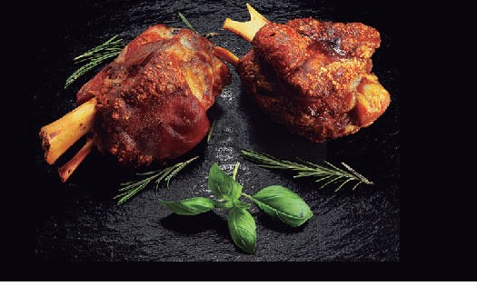
Stinco di maiale cotto a bassa temperatura. Ogni sacchetto contiene uno stinco intero già diviso in due porzioni individuali, pratiche per servizio e reparto.
| Cartone | 6 sacchetti · 12 porzioni totali |
| Shelf life | 24 mesi · 3 mesi in frigo dopo scon. |
| Rigenerazione | 20 min forno 200°C |
| Glutine | Senza Glutine |
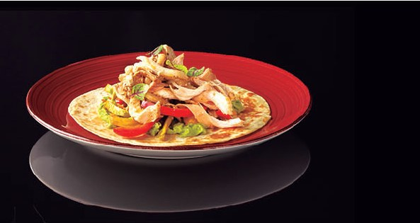
Sovracoscia di pollo disossata cotta sottovuoto per oltre 3 ore, elaborata con carne e spezie. Pronta da sfilacciare per tacos, fajitas, burger e panini.
| Confezione | 4 sacchetti da ±1 kg |
| Shelf life | 24 mesi · 3 mesi in frigo dopo scon. |
| Rigenerazione | 4 min microonde 800W |
| Glutine | Senza Glutine |
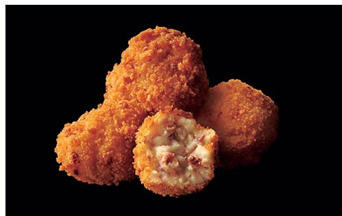
Croquetas con panatura panko croccante e ripieno al baccalà, pensate per frittura diretta da congelato. Linea tapas pronta per aperitivo, banco caldo e servizio food.
| Confezione | 4 sacchetti da 1 kg |
| Peso pezzo | 35 g |
| Shelf life | 24 mesi |
| Frittura | Max 4–5 pezzi per litro d'olio a 180°C |
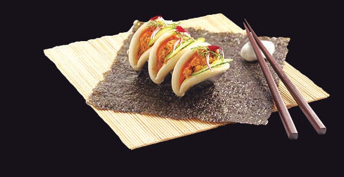
Panino morbido orientale con più varianti disponibili: mazzancolle curry e scorze di agrumi, guanciale di maiale CBT e kimchee, veggie con latte di tigre, coda di manzo hoisin, coscia d'anatra chili dolce.
| Confezione | 2 vaschette da 24 pezzi |
| Cottura | 5 min vapore senza scongelare |
| Shelf life | 24 mesi |
Gyozas surgelati con varianti selezionate per proposta fusion: manzo CBT e salsa hoisin, mazzancolle curry e scorze di agrumi, verdura fresca con latte di tigre in stile ceviche.
| Peso pezzo | 30 g vapore · 20 g padella |
| Confezione | 3 vaschette da 40 pezzi |
| Cottura | 5 min vapore + doratura in padella |
| Shelf life | 24 mesi |
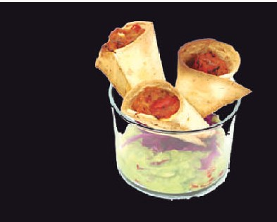
Fajitas già pronte e farcite a mano con pulled chicken CBT e verdura fresca. Ricetta Tex-Mex speziata dal gusto autentico e pronta per forno senza scongelamento.
| Confezione | 4 vaschette da 24 fajitas |
| Cottura | 10 min forno 180°C da surgelato |
| Shelf life | 24 mesi |
| Linea | Etnico Tex-Mex |
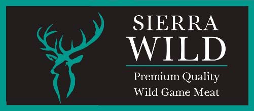
Macinato di cinghiale Sierra-Wild in confezione sottovuoto, indicato per preparazioni a base di selvaggina. Prodotto da scongelare a 0-4°C e cuocere fino a temperatura interna minima di 75°C.
| Codice | 623 · EAN 8436048901832 |
| Formato | 1 kg · unità vendita 320 x 214 mm |
| Confezione | 5 pezzi/cartone · cartone 5 kg |
| Conservazione | Surgelato -18/-20°C · shelf life 3 anni |
| Preparazione | Scongelare 0-4°C · cottura a cuore min. 75°C |
Prodotti ittici congelati · San Benedetto del Tronto (AP) · fatti a mano in Italia
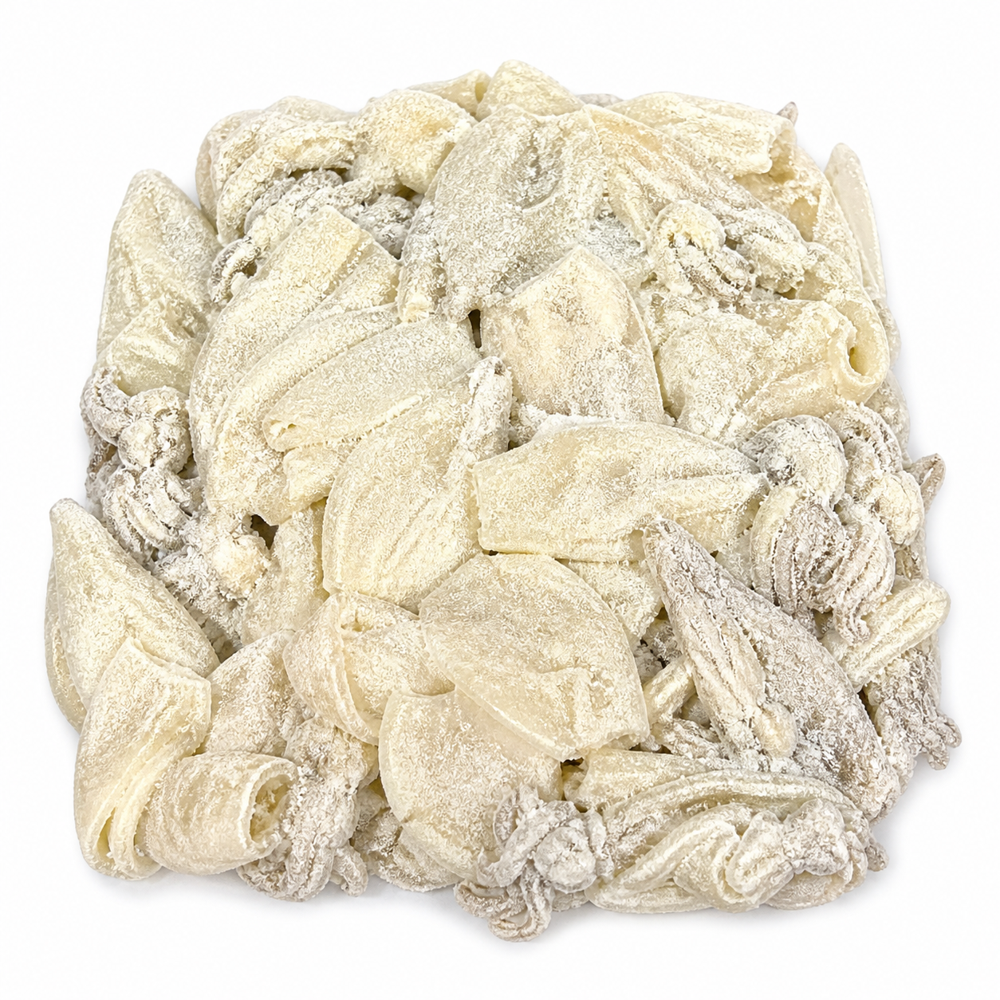
Calamaro patagonico infarinato, lavorato a mano in Italia per secondi piatti e fritture. Prodotto da cuocere direttamente da congelato, senza scongelamento preventivo.
| Codice | FCALBUTINF4BK |
| Composizione | Calamaro Patagonia 90% · semola di grano duro/farina di mais 10% |
| Confezione | 1 busta da 4 kg · 126 cartoni/bancale |
| Conservazione | Inferiore a -18°C · TMC 18 mesi |
| Cottura | Frittura 180°C · 3-4 min |
| Allergeni | Molluschi e glutine · tracce di crostacei, pesce e solfiti |
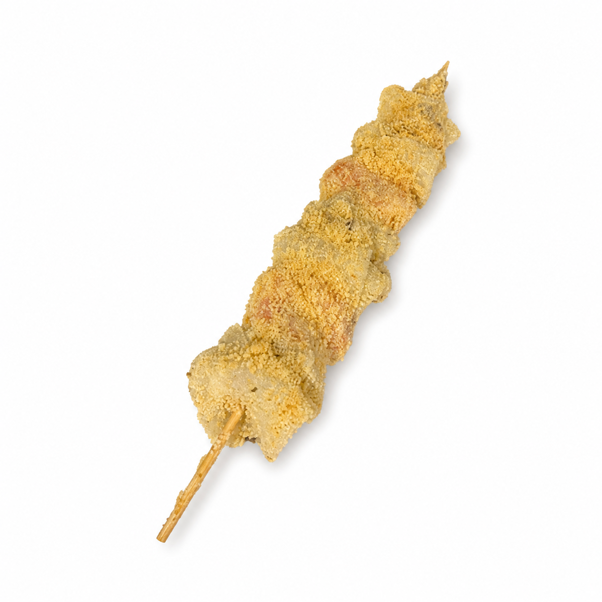
Spiedini impanati di calamaro Patagonia e gambero argentino, indicati come antipasto o secondo piatto. Prodotto lavorato a mano in Italia e da cuocere direttamente da congelato.
| Codice | FSPICALGAMARGIMP4BK |
| Composizione | Calamaro 60% · gambero 30% · impanatura 10% |
| Confezione | 1 busta da 4 kg · 40-43 pezzi |
| Conservazione | Inferiore a -18°C · TMC 18 mesi |
| Cottura | Forno ventilato 200°C · 15 min |
| Allergeni | Molluschi, crostacei, glutine e solfiti · tracce di pesce |
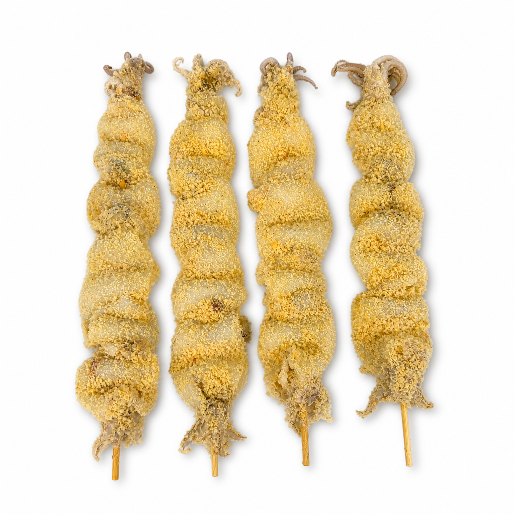
Spiedini impanati di calamaro Patagonia per antipasti o secondi piatti. Referenza fatta a mano in Italia, in formato bulk, da portare in cottura direttamente da congelata.
| Codice | FSPICALPATIMP4BK |
| Composizione | Calamaro Patagonia 90% · impanatura 10% |
| Confezione | 1 busta da 4 kg · 50-55 pezzi |
| Conservazione | Inferiore a -18°C · TMC 18 mesi |
| Cottura | Forno ventilato 200°C · 15 min |
| Allergeni | Molluschi e glutine · tracce di pesce, crostacei e solfiti |
Dal 1991 — Verdure fresche surgelate, ortaggi locali pugliesi di edizione limitata
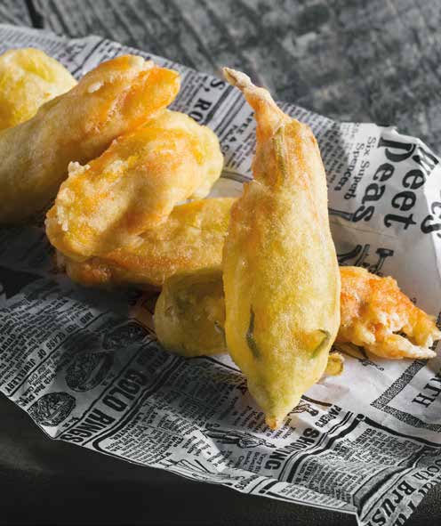
Linea di fiori di zucchina surgelati proposta in più varianti: vuoto per farciture personalizzate, ripieno mozzarella e pomodoro, ripieno con alici. Prodotto premium per antipasti, banco caldo e street food.
| Codice | 106 · pack busta 1000 g |
| Cottura | Frig. 175°C 3 min · Air fryer 200°C 6 min · Forno 220°C 10 min |
| Cartone | 4 kg · 90 cartoni/pallet |
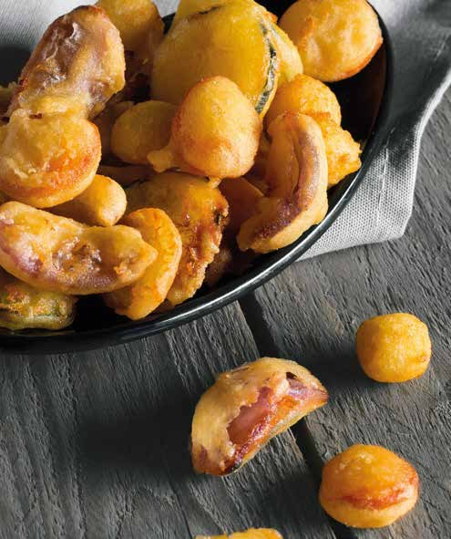
Mix di verdure in formato rondella e bocconcino, pensato per frittura e servizio rapido. Abbina rondelle di carota e zucchine con cipolla rossa e cavolfiori per un assortimento colorato.
| Ingredienti | Carota, zucchine, cipolla rossa, cavolfiori |
| Codice | 125 · pack busta 1000 g |
| Cottura | Frig. 175°C 3 min · Air fryer 200°C 6 min · Forno 220°C 10 min |
| Cartone | 5 kg · 90 cartoni/pallet |
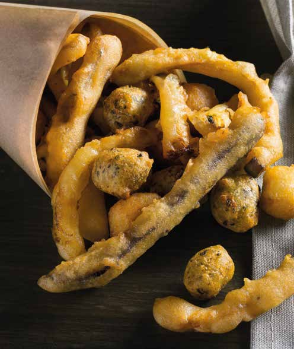
Mix composto da stick di zucchine, melanzane e cavolfiore, completato da frittelline zucchine e menta. Soluzione pronta per arricchire il banco fritto con più consistenze nello stesso assortimento.
| Ingredienti | Zucchine, melanzane, cavolfiore, zucchine e menta |
| Codice | 126 · pack busta 1000 g |
| Cottura | Frig. 175°C 3 min · Air fryer 200°C 6 min · Forno 220°C 10 min |
| Cartone | 5 kg · 90 cartoni/pallet |
Dal 1580, Ascoli Piceno — Prodotti panati e pastellati, tradizione marchigiana
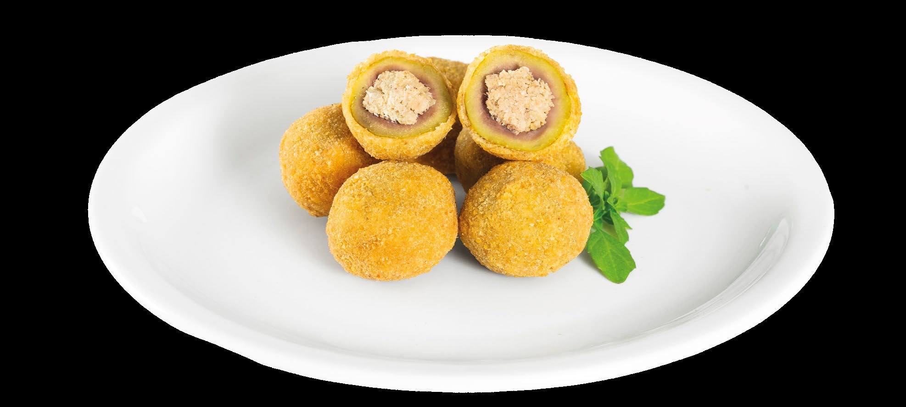
Olive verdi denocciolate, riempite con un mix di carni cucinate con maestria, poi panate e surgelate. Prodotto simbolo del territorio piceno e proposta centrale per il fritto misto.
| Peso pezzo | 19–20 g · 50/52 pezzi/kg |
| Confezioni | 2,5 kg · 1 kg · 500 g · 250 g pronto forno |
| Cottura | Friggitrice 165°C 4/5 min · Forno 200°C 8/9 min · Air fryer 200°C 7/8 min |
| Codice | 0116 |
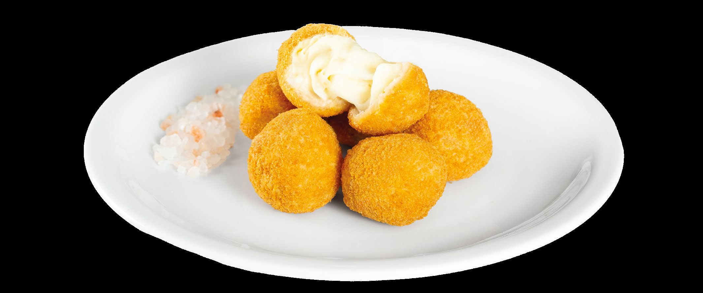
Ciliegine di mozzarella panate e surgelate, croccanti fuori e filanti dentro. Formato adatto per aperitivi, buffet, banco caldo e servizio snack.
| Peso pezzo | 18–19 g · 52/55 pezzi/kg |
| Confezioni | 2,5 kg · 1 kg · 500 g · 250 g pronto forno |
| Cottura | Friggitrice 165°C 3/4 min · Forno 200°C 7/8 min · Air fryer 200°C 6/7 min |
| Codice | 0124 |
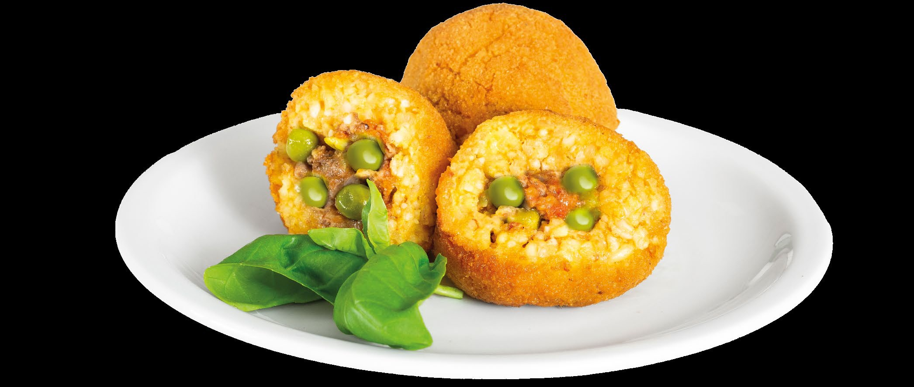
Arancino conico con risotto allo zafferano e cuore di ragù con piselli, panato e surgelato. Prodotto da banco caldo e street food con forte riconoscibilità.
| Peso pezzo | 30 / 60 / 120 g |
| Confezione | 2 x 2,5 kg · cartone 5 kg |
| Cottura | Friggitrice 165°C 6/7 min · Forno 200°C 10/12 min · Air fryer 200°C 8/9 min |
| Codice | 0165 · anche pronto forno |
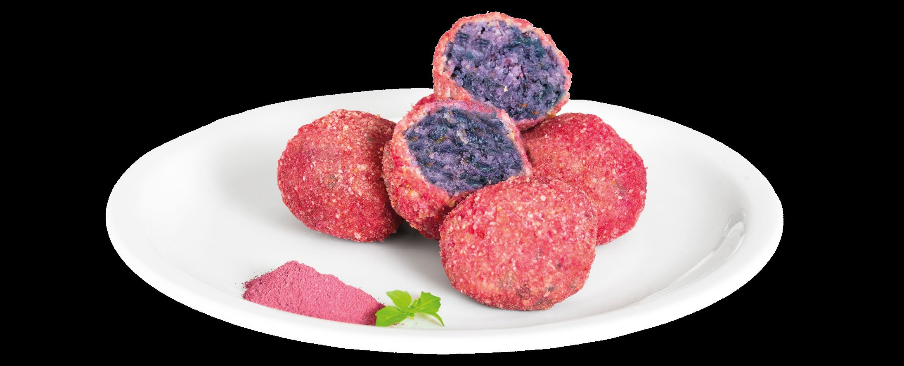
Bocconcini con cavolo verza viola, cipolla, sedano e carota, avvolti da panatura colorata con rapa rossa essiccata. Proposta vegetariana dal colore distintivo.
| Peso pezzo | 28–30 g · 33/55 pezzi/kg |
| Confezioni | 2,5 kg · 250 g pronto forno |
| Cottura | Friggitrice 165°C 5/6 min · Forno 200°C 8/9 min · Air fryer 200°C 7/8 min |
| Codice | 0281 |
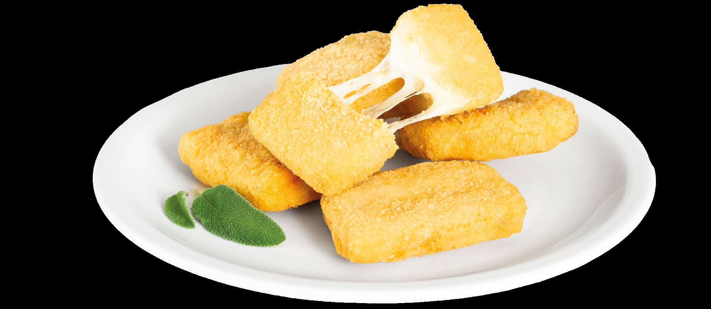
Rettangoli di formaggio di latte vaccino e ovino abruzzese, panati e surgelati. Specialità vegetariana dal cuore filante, ideale per fritto misto e aperitivo.
| Peso pezzo | 40–50 g · 20/25 pezzi/kg |
| Confezione | 2 x 2,5 kg · cartone 5 kg |
| Cottura | Friggitrice 165°C per 2/3 min |
| Codice | 0134 |
Cacio e ovo inserito nella selezione Bachetti come articolo richiesto, da completare con scheda tecnica e collegamento catalogo quando il materiale sarà disponibile.
| Categoria | Specialità fritta |
| Stato scheda | Da integrare |
| Link catalogo | Non disponibile nella cartella |
| Note | Inserito senza collegamento PDF |
Masters since 1896 — Oli professionali per frittura, canale Out of Home
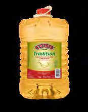
Olio per frittura professionale della linea Tradition Borges. Formato 7,5L in tanica PET comprimibile per ottimizzare i rifiuti. Senza grassi idrogenati, senza olio di palma, senza allergeni.
| Confezione | 2 x 7,5 litri |
| Cartone | 15 kg netti · 2 pz/scatola |
| Shelf life | 12 mesi |
| Scatole strato | 12 · Pallet: 48 scatole |
| Formato | Tanica PET 7,5L (impilabile, leggera) |
| Additivi | Senza grassi idrogenati · No palma · No allergeni |
Tecnica di frittura giapponese con pastella leggera e aerea preparata con acqua frizzante ghiacciata e farina. Lo shock termico con l'olio caldo crea una crosta croccantissima che non assorbe grassi.
Tecnica di cottura a 50–70°C in sacchetti sottovuoto per ore (fino a 16h). Garantisce morbidezza perfetta, sapori concentrati, sicurezza alimentare e shelf life elevata senza additivi.